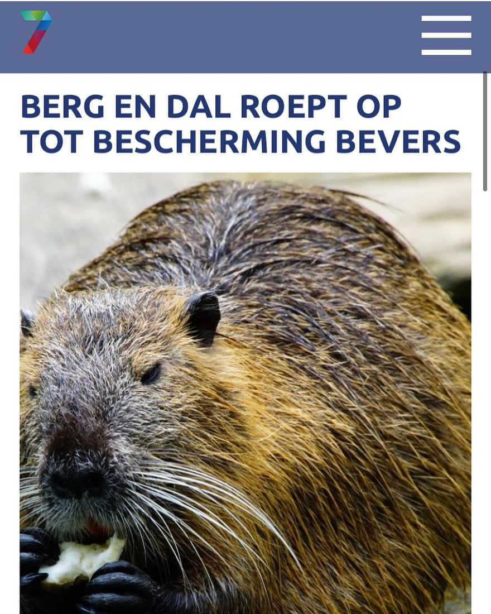

Beverrat, geen bever
19 december 2020 · RN7
- Op de foto
- Beverrat
- Het ging over
- Europese bever

Westerkwartier is niet de enige die hiermee de fout in gaat. @rn7online gaat ook gezellig mee met deze mooie foto. Welkom op onze pagina @rn7online ! We hopen nog veel van jullie te mogen posten :)
- op de foto staat een Beverrat, en geen Europese bever